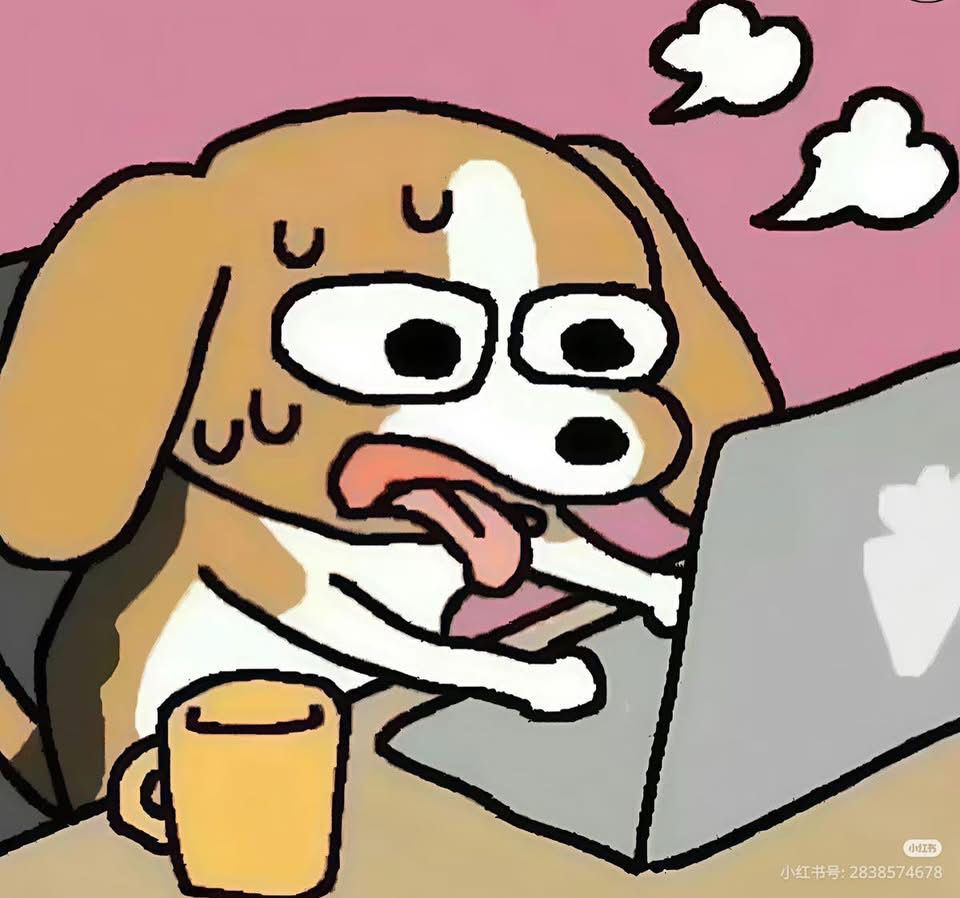

ท่ามกลางความวุ่นวายในแต่ละวัน เรื่องราวของ "เจ้าโคล่า" สุนัขพันธุ์โกลเด้นรีทรีฟเวอร์วัยสองปีของฉัน มักจะเริ่มต้นขึ้นพร้อมกับเสียงเล็บกระทบพื้นกระเบื้องในยามเช้า และดวงตากลมโตสีน้ำตาลเข้มที่จ้องมองมาอย่างมีความหมาย ราวกับมันคอยนับถอยหลังรอเวลาให้ฉันลุกขึ้นมาเริ่มต้นวันใหม่ด้วยกัน ทุกๆ เย็น โคล่าจะมีภารกิจประจำตัวที่ขยันทำยิ่งกว่าใคร นั่นคือการไปนั่งเฝ้าหน้าประตูบ้านตรงจุดเดิมเพื่อรอฟังเสียงรถมอเตอร์ไซค์ของฉันเลี้ยวเข้าซอย แ ละทันทีที่ประตูรั้วเปิดออก มันจะส่งเสียงครางเบาๆ ในลำคอด้วยความตื่นเต้น พร้อมกับส่ายบั้นท้ายและพวงหางขนนุ่มฟูไปมาอย่างรุนแรงจนตัวโยก ยื่นหน้าเข้ามาดมกลิ่น และใช้จมูกเปียกชื้นดันมือของฉันเพื่อให้กอด แม้ในวันที่ฉันเหนื่อยล้าจากปัญหาภายนอก หรือต้องเผชิญกับเรื่องเครียดๆ มาตลอดทั้งวัน แค่เพียงได้นั่งลงบนพื้นข้างๆ แล้วปล่อยให้มันเอาคางอุ่นๆ มาเกยไว้บนตัก พร้อมสายตาที่เต็มไปด้วยความจงรักภักดีแบบไม่มีเงื่อนไข คว ามเครียดเหล่านั้นก็คล้ายจะมลายหายไปจนหมดสิ้น โคล่าอาจจะเป็นแค่สุนัขตัวหนึ่งในโลกใบใหญ่ แต่สำหรับฉันแล้ว มันคือเพื่อนแท้สี่ขาที่สอนให้รู้จักคำว่าความสุขที่เรียบง่าย และเป็นเสมือนพื้นที่ปลอดภัยอันแสนอบอุ่นที่ไม่ว่าจะเจอกับอะไรมาข้างนอก ก็รู้ว่าจะมีสิ่งมีชีวิตเล็กๆ ตัวนี้คอยต้อนรับกลับบ้านด้วยความรักทั้งหมดที่มันมีเสมอ